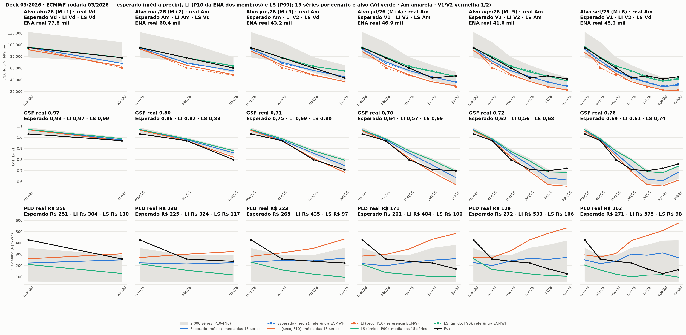

Previsor de Bandeiras Tarifárias
Dá para usar. Até três meses à frente, o modelo acerta a cor em cerca de 3 de cada 4 meses. De quatro a seis meses, serve como cenário, com faixa larga. Em todos os horizontes ele acerta cerca do dobro de uma regra ingênua.
Recomendação
M+1 a M+3
Entregar a cor esperada com a probabilidade de cada cor. O acerto é igual ao que o modelo teria com a hidrologia perfeita. A faixa entre os cenários seco e úmido cobre de uma a duas cores.
M+4 a M+6
Entregar cenário seco, esperado e úmido, com aviso de baixa confiança. A faixa contém a cor real, mas costuma ir de verde a vermelha 2. Ainda assim, o acerto é o dobro de repetir a bandeira atual (cerca de 16%).
Como a previsão é feita
A bandeira sai de uma regra da ANEEL: o índice X = PLD gatilho × (1 − GSF) decide a cor (verde até 27,48; amarela até 68,99; vermelha 1 até 95,05; acima disso, vermelha 2). O modelo prevê os dois insumos e aplica a regra.
ENA prevista pelo ECMWF (sazonal), do mês seguinte até M+6.
Das 2.000 séries do deck oficial, escolhem-se as 15 com trajetória de ENA mais parecida com a do ECMWF.
Média do GSF e do PLD gatilho dessas 15 séries, com as regras da CCEE.
Cor pela regra, probabilidade pelo erro histórico. Cenário seco (P10 da ENA) e úmido (P90) repetem o processo.
Acerto contra regras ingênuas
Backtest com 16 decks (jan/2025 a set/2026) e 89 previsões, simulando alguém na data de cada deck, só com a informação disponível naquele dia. A linha tracejada é o oráculo (ENA real no lugar da prevista): é o teto do método, não um desempenho esperado.
Ver os números
| Acerto da cor | M+1 | M+2 | M+3 | M+4 | M+5 | M+6 |
|---|
- Erra por menosQuando erra, o modelo fica em média a 0,33 cor da real em M+1–3. Repetir a bandeira atual fica a 0,74.
- Pega mudançasEm 64 das 89 previsões a cor mudou em relação à do deck. O modelo acertou 55% delas; repetir a bandeira, por definição, nenhuma.
Histórico deck a deck
Todos os 16 decks com previsão do ECMWF, de janeiro de 2025 a setembro de 2026 (não há rodada para os decks de setembro e outubro de 2025). Cada bloco é um deck. As linhas mostram a bandeira real, o cenário esperado e os cenários seco (LI) e úmido (LS). Escolha no seletor o ano dos meses previstos; aparecem todos os decks que previram algum mês daquele ano (os decks de novembro e dezembro de 2025 também aparecem em 2026). Passe o cursor sobre a célula do esperado para ver a probabilidade, o GSF e o preço. O traço vertical marca a virada do ano.
| Previsões já realizadas | Decks | Previsões | Esperado acerta a cor | Cor real dentro de LS–LI |
|---|---|---|---|---|
| Decks de 2025 | 10 | 59 | 37 (63%) | 55 (93%) |
| Decks de 2026 | 6 | 30 | 14 (47%) | 29 (97%) |
| Total | 16 | 89 | 51 (57%) | 84 (94%) |
- Início de 2025Quatro das cinco vezes em que a cor real saiu da faixa estão nos decks de janeiro e fevereiro de 2025, para maio e junho: o preço real subiu acima de tudo o que esses decks simulavam, e até o cenário seco ficou verde ou amarelo.
- 2º semestre de 2026O ECMWF previu seca e o período foi úmido. A cor real ficou colada no cenário úmido e o esperado errou para o lado caro várias vezes seguidas. A quinta saída da faixa está aqui (deck de maio para agosto).
- Decks iniciaisOs primeiros decks de 2025 não têm probabilidade: ainda não havia erros passados suficientes para calibrá-la sem usar dados do futuro.
- Mais recenteO deck de setembro de 2026 acertou outubro e prevê verde para novembro (80%) e dezembro (100%).
Onde o modelo erra: no preço
Em cada erro de M+4 a M+6, trocamos um insumo de cada vez pelo valor real. É um diagnóstico com dados do futuro, não um método de previsão.
| M+4 a M+6 | Acerto | Erro médio do GSF | Erro médio do PLD |
|---|---|---|---|
| Modelo como está | 42% | 0,053 | R$ 94 |
| Com o GSF real | 49% | — | — |
| Com o PLD real | 86% | — | — |
| Oráculo (ENA real) | 75% | 0,040 | R$ 53 |
O GSF piora pouco quando a hidrologia vem do ECMWF. O preço quase dobra o erro, porque reage muito mais à mesma hidrologia errada. Há também meses em que o preço real ficou fora de tudo o que o deck oficial simulava (março de 2025 e março de 2026); nenhuma escolha de hidrologia corrigiria esses casos.

O que entregar para a macro
Para a projeção da energia no IPCA, sugiro entregar o adicional tarifário esperado de cada mês, usando a probabilidade inteira e não só a cor mais provável:
Os valores do adicional por cor devem ser os vigentes na resolução da ANEEL; precisam ser confirmados antes do primeiro envio. Junto, vão a cor esperada e os cenários seco e úmido, com a confiança de cada horizonte.
Ressalvas
- Amostra pequena16 decks e 89 previsões, todos em 2025–2026, dois anos secos. A amostra cresce um deck por mês.
- Dentro da amostraO número de séries (15) e o peso da trajetória foram escolhidos no mesmo período avaliado. As previsões são fora da amostra, mas essa escolha não é.
- 2026 piorO acerto caiu de 63% (decks de 2025) para 47% (decks de 2026), pelo erro do ECMWF no segundo semestre.
- OráculosOs números com ENA real ou PLD real são limites e diagnósticos, não desempenho esperado.
Próximos passos
- Rotina mensal. Deck e ECMWF de cada mês geram as probabilidades e o adicional esperado. Cada mês novo amplia o backtest.
- Preço. Corrigir o viés na transição do período úmido para o seco e testar a combinação com a curva da Dcide, o que exige o histórico de curvas de 2025.
- Mais história. Decks de 2023–2024, se houver ECMWF para eles, para avaliar fora do período em que os parâmetros foram escolhidos.